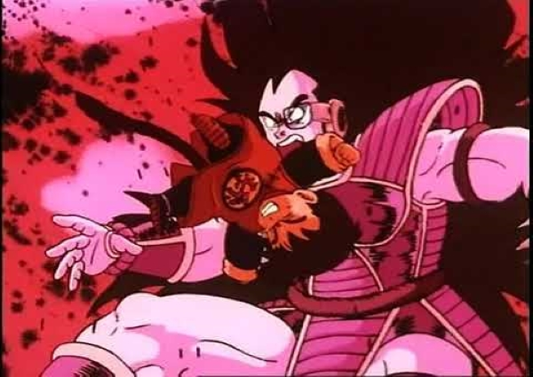
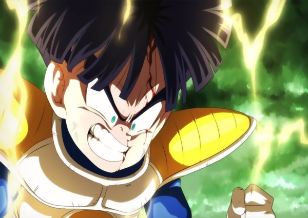
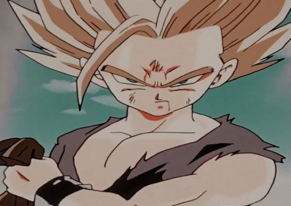
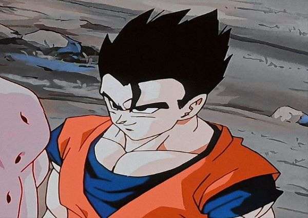
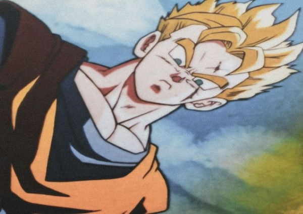

História de Son Gohan
Saga Saiyajin
Gohan é introduzido aos quatro anos de idade no início de Dragon Ball Z. Ele é apresentado como o primeiro filho do protagonista da série, Goku, batizado com o mesmo nome de seu bisavô adotivo. Durante uma visita à casa do Mestre Kame, Gohan foi raptado por Raditz, como parte de seu plano para fazer Goku retomar seus instintos assassinos de Saiyajin. Gohan é preso na nave de Raditz, enquanto Goku e Piccolo tentam derrotar o Saiyajin. Durante a batalha, Goku é brutalmente torturado e com isso, a enorme raiva de Gohan explode, liberando seu poder dormente, o que lhe permite ferir Raditz. Seguindo a morte de Goku para vencer seu irmão, Gohan é treinado por Piccolo, após este ficar surpreso com seu enorme potencial, para assim, enfrentar os dois Saiyajins que chegariam a Terra em um ano. Ao longo desse período, Gohan se torna o primeiro amigo que seu mestre já teve. Consequentemente, Piccolo se sacrifica para salvar Gohan no meio do confronto contra Nappa. Gohan, depois, auxilia seu pai, que foi ressuscitado por Shenlong a derrotar Vegeta.
Saga Freeza
Após a vitória sobre os Saiyajins, Gohan, Kuririn e Bulma viajam para Namekusei em busca das Dragon Balls Originais para ressuscitar todos os que foram mortos na Terra. No entanto, eles se deparam com um alienígena chamado Freeza que também buscava as Dragon Balls. Gohan e Kuririn encaram alguns dos soldados de Freeza e depois se aliam à Vegeta para enfrentarem um grupo de mercenários chamado Forças Especiais Ginyu. Contudo, os três acabam sendo derrotados até que Goku chega à Namekusei e os ajuda a vencer os inimigos. Eles depois terminam de juntar as Dragon Balls e trazem Piccolo até Namekusei para lutar contra Freeza. Durante a batalha contra Freeza, Gohan libera seu poder oculto mais uma vez, quando o vilão ataca Kuririn e Piccolo, mas mesmo assim, não é páreo para o Imperador do Universo. Após a transformação de Goku em Super Saiyajin durante o combate contra Freeza, Gohan e os outros são teletransportados para a Terra por Porunga. De volta a sua casa, Gohan recebe notícias de que seu pai venceu Freeza e espera pacientemente a sua volta.
Saga Cell
Um ano depois, Freeza chega à Terra ao lado de seu pai, Cold, para se vingar, mas os dois acabam sendo mortos por Trunks, um jovem que veio do futuro para alertar os Guerreiros Z sobre a aparição dos androides assassinos criados pela Red Ribbon, uma antiga organização que havia sido destruída por Goku no início de Dragon Ball. Goku retorna a Terra após treinar em diversos planetas e começa a treinar Gohan, junto de Piccolo, para a chegada dos Androides. Depois de três anos de treinamento, os Androides aparecem e derrotam os Guerreiros Z. Goku, então, leva Gohan para treinar na Sala do Tempo, localizada no Templo de Kami-Sama que é ligada a outra dimensão, onde um dia na Terra equivale a um ano. Nessa época, surge o androide Cell, que absorve os androides Números 17 e 18, tornando-se um ser perfeito e ganhando poder suficiente para superar todos os Guerreiros Z. Após emergirem da Sala do Tempo, Goku e Gohan se preparam para os Jogos do Cell. Após Goku enfrentar o vilão, ele manda Gohan em seu lugar, confiando-o a missão de salvador da Terra. Durante a batalha contra Cell, Gohan libera seu poder oculto e se transforma em Super Saiyajin 2. No entanto, Goku acaba morrendo mais uma vez, mas, ele ainda consegue ajudar seu filho a não desistir e assim, Gohan destrói Cell definitivamente durante uma disputa de Kamehamehas.
Saga Majin
Sete anos se passam e Gohan se foca nos estudos, mas também, protege sua cidade com uma identidade secreta que ele mesmo criou, o Grande Saiyaman. Aos dezoito anos, ele é mandado para o Colégio Estrela Laranja e conhece uma garota chamada Videl, que o convence a participar do 25º Torneio de Artes Marciais. Os dois começam a treinar juntos e acabam se envolvendo romanticamente. Durante o torneio, Gohan reencontra Goku, que ganha permissão para permanecer um dia no mundo dos vivos. Durante sua luta contra Kibito, Gohan tem sua energia roubada por Spopovich e Yamu. Ela depois é usada pelo mago Babidi para despertar o demônio Majin Boo. Gohan entra na nave espacial de Babidi junto com Kaioshin, Goku e Vegeta, onde enfrenta Dabura. Posteriormente, Gohan é facilmente derrotado por Majin Boo, que enfim desperta. Quase morto, Gohan é levado por Kaioshin para o Planeta Supremo, onde treina com a lendária Espada Z. Porém, ele acidentalmente a quebra e liberta um antigo Kaioshin que realiza um ritual mágico para despertar todo o seu poder. Assim, Gohan retorna a Terra e consegue superar os poderes do Super Boo. Porém, ele é absorvido pelo demônio, sendo libertado, posteriormente, por Goku e Vegeta. Gohan é morto por Kid Boo, quando este destrói a Terra, junto com Piccolo, Trunks e Goten. No final da batalha, Gohan e os outros são revividos por Porunga de Namekusei e eles entregam suas energias à Goku para que ele completasse a Super Genki Dama que destrói Boo completamente. Dez anos depois, Gohan termina seus estudos e se torna um famoso cientista. Ele também se casa com Videl e os dois têm uma filha chamada Pan.
Futuro alternativo
Gohan do Futuro aparece em uma linha do tempo alternativa em que é o único guerreiro sobrevivente; os outros morreram em batalhas contra os androides (Goku, que falece por causa de uma doença no coração, é a única exceção). Gohan é mostrado treinando o filho de Bulma, Trunks, para ajudá-lo nas batalhas contra os androides #17 e #18. Nesta linha do tempo, Gohan se tornou um Super Saiyajin e utiliza um uniforme similar ao de seu pai, com um símbolo kanji nas costas. Gohan revela que o utiliza na esperança de se tornar tão forte quanto seu pai um dia, e Trunks menciona que sua mãe, Bulma, o acha muito parecido com Goku quando o veste. Gohan tem os cabelos bem mais curtos do que sua versão do presente, uma cicatriz no lado direito do rosto, e parece ter perdido seu braço esquerdo enfrentando #17 e #18. Ele eventualmente é morto pelos dois androides, em uma batalha em que #17 diz que, em batalhas anteriores, o máximo que havia utilizado era a metade de sua força; Gohan se surpreende com o comentário, e #18 sorri antes do mangá mostrar Trunks, que não sente o ki de Gohan ao despertar. No especial de TV é mostrado que os dois androides metralharam Gohan até a morte.
